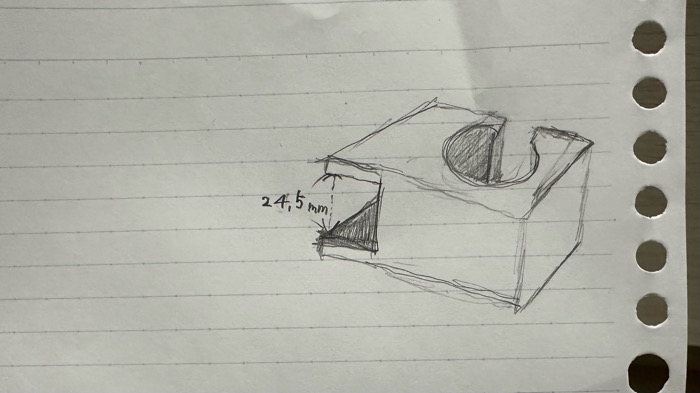
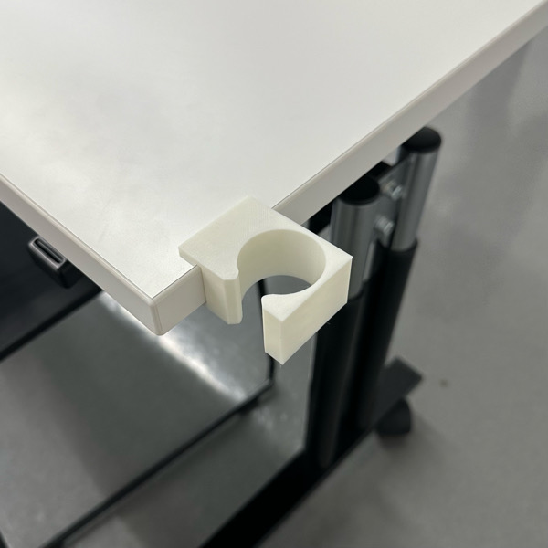
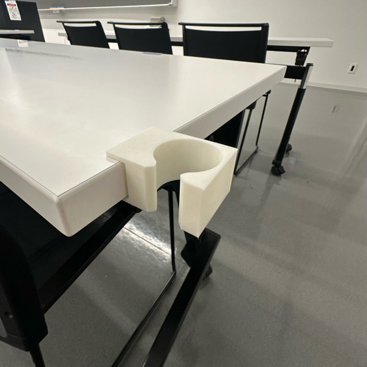

〖Design for Others〗
＜取り組むことにした問題の説明＞
『雨の日濡れた傘を床に置きたくない！！！立て掛けたいけど滑る、、傘邪魔！！』
そんなお悩みをお持ちのそこの"神大生"のために！
その名も神大生の神大生による神大生のための傘ホルダーを作りたいと思い、製作してみました。
まずは、イメージ図↓↓↓

ターゲットを神大生に絞ったので、神大生のみんながよく使うであろう大きい部屋のテーブルの
厚みを測ったところ…25㎜弱だったため、今回は幅を24.5mm目安に立体を作っていきます。
＜製品プロトタイプの写真や動画＞
完成品はこちら！


＜説明＞
幅をキツめに作って正解でした。ぴったりとしっかりとに固定されています。
これでこの立体に傘の持ち手をかけることができるというわけです！
メリットとしては．．．
・軽いため持ち運びしやすい
・濡れた傘が固定される(滑り落ちない)
・取り外しが可能
デメリットとしては．．．
・このテーブルにしか対応していない
・角がとがっているため危ない(改善の余地あり 例：角を丸くする)
＜使用機材＞
3Dプリンター
＜同じ班のメンバーのDesign for Othersのページへのリンク＞
メンバーのユーザーネームが分からない．．．